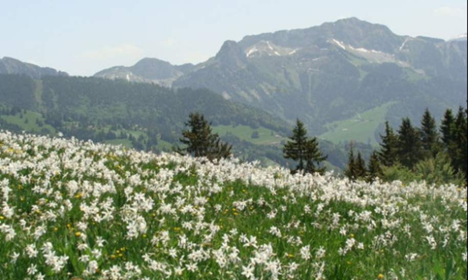
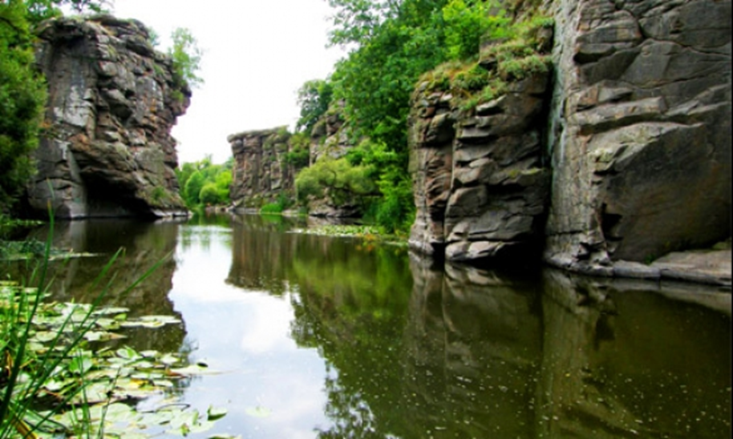
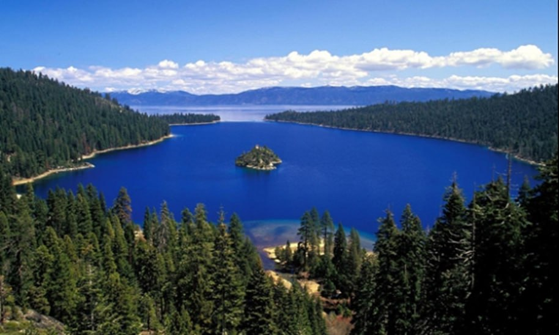

Пам’ятки природи України
Україна – одна з найбільших за територією країн Європи з багатоманітною і мальовничою природою, що викликає подив та захоплення своїми творіннями, кожне з яких має свою історію, оповиту легендами і таємницями.
Хуст – долина нарцисів
Унікальною пам’яткою природи України є «Долина нарцисів», що розташована в урочищі Кіреші, неподалік від міста Хуст Закарпатської області . Нарциси в долині з’явилися у післяльодовиковий період. Саме достатня кількість вологи сприяла появі тут великої кількості червонокнижної рослини. Тендітність і краса нарциса завжди викликала захоплення у людей. З цією квіткою пов’язано багато легенд.
Буцький каньйон
Щоб побачити справжній каньйон з граніту не потрібно їхати десь далеко за межі України. На межі між Черкаською та Вінницькою областями неподалік від села Буки протікає річка Гірський Тікич. У результаті багатовіковим старанням води тут утворився неповторний мальовничий краєвид. Скелі, що нависають над водою, створюють незабутні враження. Перш ніж потрапити в створений самою природою каньйон, води річки Гірський Тікич, падаючи з висоти на великі брили граніту, створюють незабутнє видовище, ім’я якому водоспад Вир. Гуркіт падаючої води чути далеко навколишніми територіями.
Говерла і Чорногірський хребет
Коли чуєш про Карпатські гори, виникає питання, а яка вершина найвища. Якщо поглянути на Карпатські гори з висоти пташиного польоту, то в очі впадають найвищі вершини Чорногорського хребта, адже більшість його вершин мають висоту, що перевершує дві тисячі метрів над рівнем моря. Найвищою серед них є Говерла, яка розташувалася на межі між двома областями: Закарпатською та Івано – Франківською. Краєвиди Говерли зачаровують, вабить до себе її снігова шапка, яка не тане навіть влітку. Про цю карпатську вершину складено багато легенд.
Оптимістична печера
Унікальним явищем природи є утворення в середині, на перший погляд, міцних гір, печер. Кожна з них є неповторною. Багато їх утворилося на Тернопільщині. Деякі з них викликають подиві захоплення водночас. Однією з таких печер є гіпсова печера Оптимістична, що біля села Королівка. Протягом багатьох тисячоліть працювала природа, щоб утворити таке видовище. Печера тягнеться на багато кілометрів, і є однією з найдовших у світі. Занесена до книги рекордів Гіннеса, як найдовша гіпсова печера (понад 256 км). Завдяки сталій температурі впродовж року та високій концентрації вологи на стінах печери розташувалися гіпсові кристали. Вони утворюють дивовижні візерунки.
Урицькі скелі
Ніщо не зачаровує наш погляд так, як величезні кам’яні вершини, що над лісовими масивами Львівщини. Не одне тисячоліття працювала природа над скелями поблизу сучасного села Урич. У долині річки, немов вартові, стоять Урицькі скелі. Їх вигляд дивовижний. Вони не мають аналогів, а тому унікальні. І, як все прекрасне, вони породжують безліч легенд.
Кришталеві печери
Західна Україна багата на карстові печери. Кожна з них неповторна та по-своєму унікальна. На околиці села Кривче Борщівського району Тернопільської області на одному з крутих схилів гори знаходиться вхід до Кришталевої печери — однієї з найкрасивіших карстових печер Карпат.
Озеро Синевир
Між деревами Карпатських лісів у найтихішому місці біля гірського масиву Горгани Міжгірського району, Закарпатської області розташувалося унікальне озеро Синевир. Вода в ньому дуже чиста та прозора. Краєвиди озера зачаровують і надихають на романтичний настрій. Люди з творчою фантазією дали романтичні назви озеру – «Морське око» , «Блакитне око» Карпат.